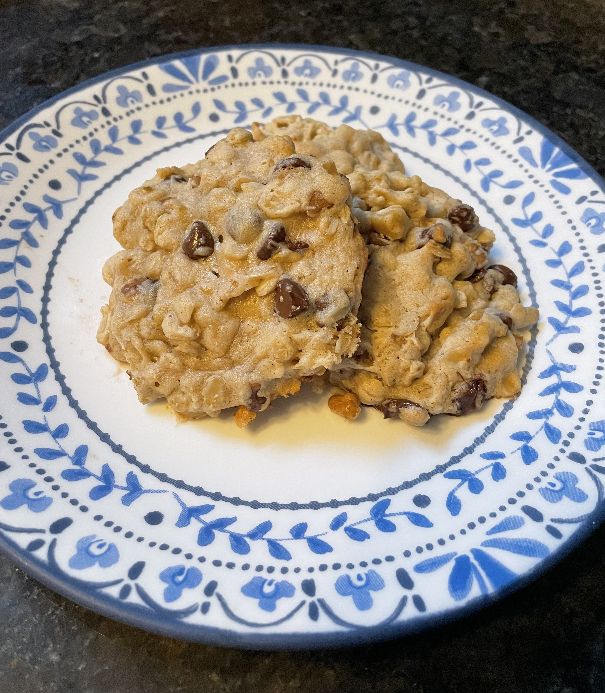

One of my favourit foods are the oatmeal chocolate chip cookies that is from a recipe that my mom got from somewhere. They are one of the most popular kinds of cookie. Basically just regular chocolate chip cookies with oats, and I like to add walnuts. My mom used to make them sometimes and then when I learned to bake they were one of the first things I made. I still like making them quite often and everyone else that lives with me likes it when I make them too.
| Ingredients | Amount | |
|---|---|---|
| Step 1 | Margarine | 1 cup |
| Brown Sugar | 3/4 cup | |
| White Sugar | 1/2 cup | |
| Step 2 | Eggs | 2 |
| Vanilla | 1 tsp | |
| Step 3 | Flour | 1 1/2 cup |
| Baking Soda | 1 tsp | |
| Cinnamon | 1 tsp | |
| Salt | 1/2 tsp | |
| Step 4 | Quick Oats | 2 cups |
| Chocolate Chips | 2 cups | |
| Walnuts (optional) | 1 cup |
Beat margarine, brown sugar and white sugar in a big bowl.
In same bowl, cream the eggs and vanilla.
In a small bowl, mix together flour, baking soda, cinnamon and salt. Then add to bigger bowl and mix.
Mix in quick oats, chocolate chips and if desired the walnuts.
Put cookies on greased cookie sheet and bake in oven at 375° for 10 minutes.